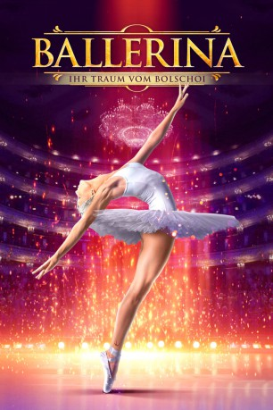

gesehen am 18.01.2019
gesehen am 18.01.2019Alternativ: Bolshoy (Englischer Titel) gesehen am 18.01.2019
 
 IMDB-Wertung: 7.0 / 10
IMDB-Wertung: 7.0 / 10  Metascore:
Metascore: 
Als Yulia eines Tages auf einen alten Balletttänzer trifft, öffnet sich eine Türe zur glitzernden Welt des Balletts. Er erkennt ihr großes Talent und bringt sie auf die Ballettschule des legendären Bolschoi-Theaters. Doch vor dem Glanz und dem Ruhm sind ab sofort harte Arbeit, Neid und der ständige Ehrgeiz, noch besser zu werden ihr Alltag. Yulia will ihre strenge Lehrerin Galina und den brillanten Choreographen Antoin überzeugen und so ihren Platz in der ersten Reihe als Primaballerina erkämpfen.
Jahr: 2017
Dauer: 131 Minuten
FSK: 0
Land: Russland Studio: Sunfilm EntertainmentTonspuren:
Untertitel: Deutsch,
Auflösung: 1080p (1920x808) Größe: 5130 MB
Genre: Drama
Regisseur: Valeriy Todorovskiy
Drehbuch: Anastasiya Palchikova, Anastasiya Palchikova, Ilya Tilkin, Valeriy Todorovskiy
Soundtrack: Anna Drubich, Pavel Karmanov
Darsteller:
Datei: X:\2017(A-F)\Ballerina - Ihr Traum vom Bolschoi (2017, FSK0, 1920x808).mkv seit 04.01.2019
Festplatte: HD 2017(A-Z)-2018(A-F)
 Es gibt insgesamt 152 Filme in der Gruppe '2017(A-F)'
Es gibt insgesamt 152 Filme in der Gruppe '2017(A-F)'